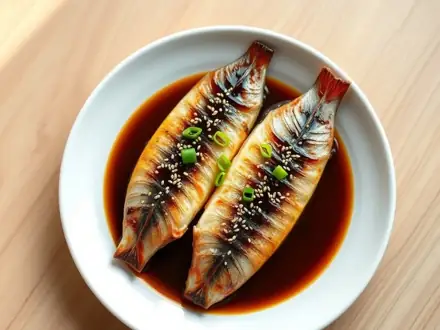
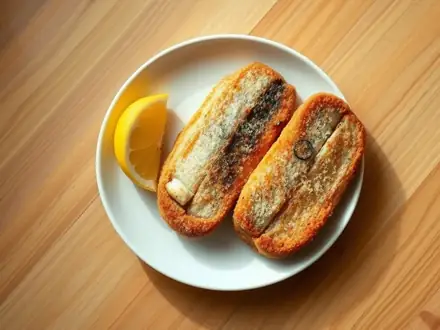
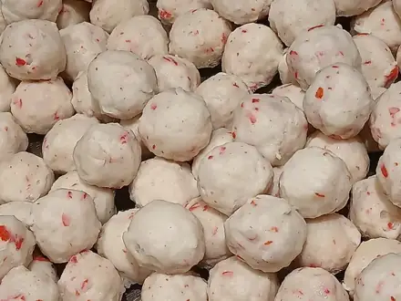

Что приготовить из рыбы
Минтай, лосось, консервы: на сковороде, в духовке и на пару. 57 рецептов: у каждого время, калории и БЖУ на порцию, пошаговые инструкции и список покупок
 Салат с тунцом и фасолью15 мин · 220 ккал · Б 21 г · Салат
Салат с тунцом и фасолью15 мин · 220 ккал · Б 21 г · Салат Стейк сёмги на сковороде15 мин · 530 ккал · Б 40 г · Второе блюдо
Стейк сёмги на сковороде15 мин · 530 ккал · Б 40 г · Второе блюдо Крабовые палочки в кляре15 мин · 439 ккал · Б 21 г · Второе блюдо
Крабовые палочки в кляре15 мин · 439 ккал · Б 21 г · Второе блюдо Горячие тосты с тунцом и сыром15 мин · 594 ккал · Б 37 г · Второе блюдо
Горячие тосты с тунцом и сыром15 мин · 594 ккал · Б 37 г · Второе блюдо Омлет с тунцом и помидорами15 мин · 348 ккал · Б 37 г · Второе блюдо
Омлет с тунцом и помидорами15 мин · 348 ккал · Б 37 г · Второе блюдо Омлет с крабовыми палочками15 мин · 360 ккал · Б 24 г · Второе блюдо
Омлет с крабовыми палочками15 мин · 360 ккал · Б 24 г · Второе блюдо Салат с тунцом и яйцом20 мин · 258 ккал · Б 23 г · Салат
Салат с тунцом и яйцом20 мин · 258 ккал · Б 23 г · Салат Лосось терияки20 мин · 512 ккал · Б 42 г · Второе блюдо
Лосось терияки20 мин · 512 ккал · Б 42 г · Второе блюдо Хек жареный на сковороде20 мин · 292 ккал · Б 31 г · Второе блюдо
Хек жареный на сковороде20 мин · 292 ккал · Б 31 г · Второе блюдо Горбуша жареная на сковороде20 мин · 380 ккал · Б 42 г · Второе блюдо
Горбуша жареная на сковороде20 мин · 380 ккал · Б 42 г · Второе блюдо
Филе скумбрии в соевом соусе на сковороде20 мин · 384 ккал · Б 28 г · Второе блюдо Паста с сёмгой в сливочном соусе20 мин · 655 ккал · Б 28 г · Второе блюдо
Паста с сёмгой в сливочном соусе20 мин · 655 ккал · Б 28 г · Второе блюдо Тунец с фасолью в томатном соусе20 мин · 446 ккал · Б 38 г · Второе блюдо
Тунец с фасолью в томатном соусе20 мин · 446 ккал · Б 38 г · Второе блюдо Оладьи из рыбных консервов20 мин · 598 ккал · Б 39 г · Второе блюдо
Оладьи из рыбных консервов20 мин · 598 ккал · Б 39 г · Второе блюдо Треска в горчично-сливочном соусе20 мин · 405 ккал · Б 38 г · Второе блюдо
Треска в горчично-сливочном соусе20 мин · 405 ккал · Б 38 г · Второе блюдо Паста с сардинами и помидорами20 мин · 705 ккал · Б 41 г · Второе блюдо
Паста с сардинами и помидорами20 мин · 705 ккал · Б 41 г · Второе блюдо Рыба на пару с лимоном25 мин · 170 ккал · Б 36 г · Второе блюдо
Рыба на пару с лимоном25 мин · 170 ккал · Б 36 г · Второе блюдо Горбуша в духовке в фольге25 мин · 335 ккал · Б 41 г · Второе блюдо
Горбуша в духовке в фольге25 мин · 335 ккал · Б 41 г · Второе блюдо Форшмак из сельди25 мин · 234 ккал · Б 13 г · Закуска
Форшмак из сельди25 мин · 234 ккал · Б 13 г · Закуска Паста с тунцом25 мин · 518 ккал · Б 26 г · Второе блюдо
Паста с тунцом25 мин · 518 ккал · Б 26 г · Второе блюдо Треска в сметане на сковороде25 мин · 328 ккал · Б 32 г · Второе блюдо
Треска в сметане на сковороде25 мин · 328 ккал · Б 32 г · Второе блюдо
Скумбрия жареная на сковороде25 мин · 476 ккал · Б 37 г · Второе блюдо Хек в томатном соусе по-итальянски25 мин · 254 ккал · Б 30 г · Второе блюдо
Хек в томатном соусе по-итальянски25 мин · 254 ккал · Б 30 г · Второе блюдо Лосось в сливочном соусе со шпинатом25 мин · 531 ккал · Б 37 г · Второе блюдо
Лосось в сливочном соусе со шпинатом25 мин · 531 ккал · Б 37 г · Второе блюдо Лосось в медово-горчичном соусе в духовке25 мин · 419 ккал · Б 35 г · Второе блюдо
Лосось в медово-горчичном соусе в духовке25 мин · 419 ккал · Б 35 г · Второе блюдо Рыба по-польски25 мин · 340 ккал · Б 33 г · Второе блюдо
Рыба по-польски25 мин · 340 ккал · Б 33 г · Второе блюдо Треска в сырной корочке в духовке25 мин · 283 ккал · Б 37 г · Второе блюдо
Треска в сырной корочке в духовке25 мин · 283 ккал · Б 37 г · Второе блюдо Треска с помидорами и маслинами на сковороде25 мин · 445 ккал · Б 48 г · Второе блюдо
Треска с помидорами и маслинами на сковороде25 мин · 445 ккал · Б 48 г · Второе блюдо Горбуша в сливочном соусе на сковороде25 мин · 516 ккал · Б 44 г · Второе блюдо
Горбуша в сливочном соусе на сковороде25 мин · 516 ккал · Б 44 г · Второе блюдо Котлеты из крабовых палочек с сыром25 мин · 588 ккал · Б 28 г · Второе блюдо
Котлеты из крабовых палочек с сыром25 мин · 588 ккал · Б 28 г · Второе блюдо Минтай, тушённый в молоке с луком25 мин · 321 ккал · Б 41 г · Второе блюдо
Минтай, тушённый в молоке с луком25 мин · 321 ккал · Б 41 г · Второе блюдо Горбуша в апельсиновом соусе в духовке25 мин · 376 ккал · Б 42 г · Второе блюдо
Горбуша в апельсиновом соусе в духовке25 мин · 376 ккал · Б 42 г · Второе блюдо Минтай в кляре30 мин · 366 ккал · Б 30 г · Второе блюдо
Минтай в кляре30 мин · 366 ккал · Б 30 г · Второе блюдо Рыба под маринадом (минтай с морковью и луком)30 мин · 276 ккал · Б 26 г · Второе блюдо
Рыба под маринадом (минтай с морковью и луком)30 мин · 276 ккал · Б 26 г · Второе блюдо Рыбные палочки домашние в духовке30 мин · 295 ккал · Б 34 г · Второе блюдо
Рыбные палочки домашние в духовке30 мин · 295 ккал · Б 34 г · Второе блюдо Рыба, запечённая с омлетом, как в детском саду30 мин · 245 ккал · Б 32 г · Второе блюдо
Рыба, запечённая с омлетом, как в детском саду30 мин · 245 ккал · Б 32 г · Второе блюдо Запеканка с тунцом и брокколи30 мин · 314 ккал · Б 29 г · Второе блюдо
Запеканка с тунцом и брокколи30 мин · 314 ккал · Б 29 г · Второе блюдо Рыба в кисло-сладком соусе по-китайски30 мин · 381 ккал · Б 29 г · Второе блюдо
Рыба в кисло-сладком соусе по-китайски30 мин · 381 ккал · Б 29 г · Второе блюдо- Рыбный суп с томатами по-средиземноморски30 мин · 205 ккал · Б 24 г · Суп
 Рыба по-французски из минтая в духовке30 мин · 469 ккал · Б 44 г · Второе блюдо
Рыба по-французски из минтая в духовке30 мин · 469 ккал · Б 44 г · Второе блюдо Скумбрия, тушённая в томате с луком и морковью30 мин · 499 ккал · Б 38 г · Второе блюдо
Скумбрия, тушённая в томате с луком и морковью30 мин · 499 ккал · Б 38 г · Второе блюдо Минтай, запечённый с грибами в сметане30 мин · 413 ккал · Б 42 г · Второе блюдо
Минтай, запечённый с грибами в сметане30 мин · 413 ккал · Б 42 г · Второе блюдо Хек, запечённый с овощами в духовке30 мин · 335 ккал · Б 36 г · Второе блюдо
Хек, запечённый с овощами в духовке30 мин · 335 ккал · Б 36 г · Второе блюдо Рыбное суфле из минтая на пару30 мин · 279 ккал · Б 33 г · Второе блюдо
Рыбное суфле из минтая на пару30 мин · 279 ккал · Б 33 г · Второе блюдо Карп жареный на сковороде кусочками30 мин · 531 ккал · Б 49 г · Второе блюдо
Карп жареный на сковороде кусочками30 мин · 531 ккал · Б 49 г · Второе блюдо Шашлычки из сёмги с овощами в духовке30 мин · 442 ккал · Б 35 г · Второе блюдо
Шашлычки из сёмги с овощами в духовке30 мин · 442 ккал · Б 35 г · Второе блюдо Перцы, фаршированные тунцом и сыром30 мин · 282 ккал · Б 28 г · Второе блюдо
Перцы, фаршированные тунцом и сыром30 мин · 282 ккал · Б 28 г · Второе блюдо Крабовый салат35 мин · 345 ккал · Б 12 г · Салат
Крабовый салат35 мин · 345 ккал · Б 12 г · Салат Скумбрия в духовке40 мин · 630 ккал · Б 55 г · Второе блюдо
Скумбрия в духовке40 мин · 630 ккал · Б 55 г · Второе блюдо Уха45 мин · 239 ккал · Б 27 г · Суп
Уха45 мин · 239 ккал · Б 27 г · Суп Рыбные котлеты45 мин · 328 ккал · Б 32 г · Второе блюдо
Рыбные котлеты45 мин · 328 ккал · Б 32 г · Второе блюдо Минтай в духовке с овощами50 мин · 213 ккал · Б 26 г · Второе блюдо
Минтай в духовке с овощами50 мин · 213 ккал · Б 26 г · Второе блюдо
Рыбные тефтели в сметане55 мин · 273 ккал · Б 24 г · Второе блюдо Домашние роллы с огурцом и тунцом60 мин · 384 ккал · Б 21 г · Закуска
Домашние роллы с огурцом и тунцом60 мин · 384 ккал · Б 21 г · Закуска Салат Мимоза с сардинами60 мин · 455 ккал · Б 21 г · Салат
Салат Мимоза с сардинами60 мин · 455 ккал · Б 21 г · Салат Гефилте фиш (рыбные котлеты в бульоне)70 мин · 249 ккал · Б 34 г · Второе блюдо
Гефилте фиш (рыбные котлеты в бульоне)70 мин · 249 ккал · Б 34 г · Второе блюдо Селёдка под шубой100 мин · 437 ккал · Б 16 г · Салат
Селёдка под шубой100 мин · 437 ккал · Б 16 г · Салат
Другие подборки
- Что приготовить из курицы
- Что приготовить из фарша
- Что приготовить из мяса
- Что приготовить из картошки
- Что приготовить из яиц
- Что приготовить из творога
- Что приготовить из кабачков
- Что приготовить из капусты
- Что приготовить из грибов
- Что приготовить из риса
- Что приготовить из макарон
- Что приготовить из гречки
- Быстрый ужин за 30 минут
- Быстрый завтрак за 20 минут
- Что приготовить на скорую руку
- ПП-рецепты: лёгкие блюда до 400 ккал
- Белковые блюда: от 25 г белка на порцию
- Дешёвые рецепты из простых продуктов
- Что приготовить ребёнку
- Постные блюда
- Блюда на пару
- Что приготовить в духовке
- Простые супы
- Простые салаты
- Выпечка и десерты
- Блюда на праздничный стол
- Что приготовить из остатков